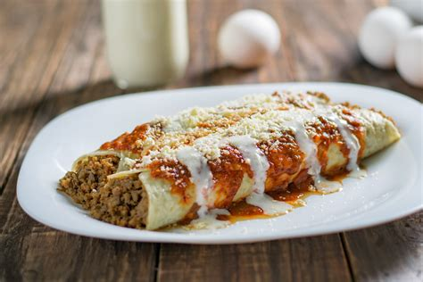

O Eminem é simplesmente uma referência mundial, sempre gostei de rap e ele é uma referência incontestável. Venceu o preconceito, venceu a pobreza, venceu a solidão e é alguém que me inspira a vencer meus desafios, a me desafiar a ser sempre o melhor que posso e uma referência onde quer que eu esteja. Ele me ensinou a lutar até mesmo contra o conforto de dizer “Dei o meu melhor” e ao invés disso, lutar até me tornar uma referência ou alcançar o objetivo. A panqueca seria só uma desculpa pra conversar e agradecer.
| Ingredientes | Quantidade |
|---|---|
| farinha de trigo | 1 e 1/2 xíc. de chá |
| leite | 1 xic. de chá |
| ovos | 2 unid. |
| óleo | 4 cl. de sopa |
| sal | a gosto |
| sal | a gosto |
| carne moída | 300 g |
| cebola picada | 2 cl. de sopa |
| tomate cortado em cubos | 1/2 unid. |
| extrato de tomate | 1/2 lata |
| creme de leite | 1 cx. |
| muçarela fatiada | 400 g |
| queijo ralado | a gosto |
Passo 1
Bata no liquidificador os ovos, o leite, o óleo, e acrescente a farinha de trigo aos poucos.
Passo 2
Após acrescentar toda a farinha de trigo, adicione sal a gosto.
Passo 3
Misture a massa até obter uma consistência cremosa.
Passo 4
Com um papel-toalha, espalhe óleo por toda a frigideira e despeje uma concha de massa.
Passo 5
Faça movimentos circulares para que a massa se espalhe por toda a frigideira.
Passo 6
Espere até a massa soltar do fundo e vire-a para fritar do outro lado.
Passo 7
Em uma panela, doure a cebola com o óleo e acrescente a carne.
Passo 8
Deixe cozinhar até que saia água da carne, diminua o fogo e tampe.
Passo 9
Acrescente o tomate picado e tampe novamente.
Passo 10
Deixe cozinhar por mais 3 minutos e misture.
Passo 11
Acrescente o extrato de tomate e temperos a gosto.
Passo 12
Deixe cozinhar por mais 10 minutos.
Passo 13
Quando o molho engrossar, desligue o fogo.
Passo 14
Deixe esfriar o molho, acrescente o creme de leite e misture bem.
Passo 15
Quando estiver bem homogêneo, leve novamente ao fogo e deixe cozinhar em fogo baixo por mais 5 minutos.
Passo 16
Recheie a panqueca com uma fatia de muçarela, uma porção de carne e enrole.
Passo 17
Faça esse processo com todas as panquecas.
Passo 18
Despeje um pouco de caldo no fundo de um refratário, para untar.
Passo 19
Disponha as panquecas já prontas no refratário e despeje sobre elas o restante do molho.
Passo 20
Polvilhe queijo ralado sobre as panquecas.
Passo 21
Leve ao forno para gratinar, em fogo médio, por 20 minutos ou até que o queijo esteja derretido.
Passo 22
Bom Apetite!
